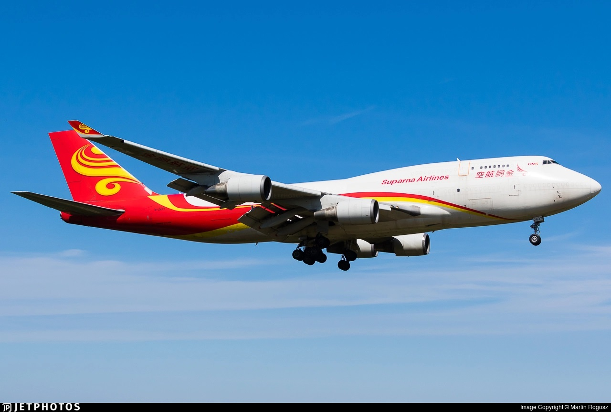

De 747 is een wide-body vliegtuig gebouwd door Boeing. Karakteristiek aan de 747 is de verdieping op het voorste gedeelte van het toestel. Op het bovendek is ook de cockpit gevestigd. Het toestel is eind jaren 60 ontworpen en vanaf 1969 in productie. Dat zal helaas in 2022 stoppen na meer dan 1600 verkochte exemplaren.
